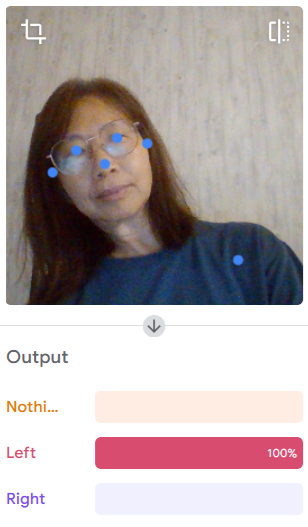
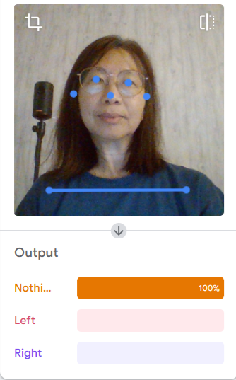
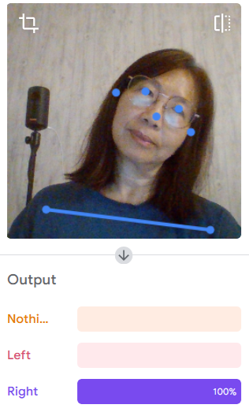

In this project, you'll play a Scratch game where YOU are the controller — no keyboard needed! Tilt your body left or right to slide a bowl across the screen and catch apples falling from the sky. A webcam watches you and uses real Artificial Intelligence (AI) to figure out which way you're leaning. Catch red apples for 1 point, or snag a golden apple for 2 points! You have 60 seconds — how high can you score? 🏆
🎒 What You Need
| Item | Details | |
|---|---|---|
| 💻 | Computer or tablet | With a working webcam (built-in laptop cameras work great!) |
| 🌐 | Internet connection | To load the AI model from Teachable Machine |
| 🐱 | Scratch 3 | Open playground.esteem.education/tinkering/ — free! |
| 📁 | The project file | Catch-Red-Yellow-Apple-Tilt.sb3 |
| 🏃 | Room to move! | You'll be leaning left and right — make sure you have a little space |
🤖 How Does the AI Work?
This project uses a clever tool called Teachable Machine (made by Google). Someone already trained a computer to recognise when you tilt Left, tilt Right, or hold your head straight (Nothing) — by showing it lots of examples through a webcam, just like teaching a pet a new trick!
When you run the project, Scratch loads this AI model and uses your camera to take tiny snapshots of you — many times every second. Each snapshot is called a sample. The AI looks at each sample and asks: "Is this person leaning left, right, or sitting still?" When it is confident enough, it tells Scratch which way to move the bowl.
Here's what the AI sees! These screenshots show the Teachable Machine model in action — notice how it gives a 100% confidence score for the correct pose each time:



📂 Opening the Project
-
Open Scratch
Go to playground.esteem.education/tinkering/ in your web browser. This special version of Scratch has the Teachable Machine AI blocks already built in! -
Grab the Project File
Download the ZIP file containing the Scratch code for this project and extract the code file (.sb3). -
Load the Project File
Click File → Load from your computer and choose Catch-Red-Yellow-Apple-Tilt.sb3. The project will open with a bowl, red apples, and golden apples already set up for you. -
Allow Camera Access
If it doesn't yet have permission, your browser will ask if Scratch can use your webcam. Click Allow. The AI needs to see you to know which way you're tilting! Make sure you have good lighting and sit where the camera can see your upper body clearly. -
Press the Green Flag and Play!
Click the big green flag ▶ at the top of the screen. The game starts immediately — lean left and right to move your bowl and catch those apples before the 60 seconds run out!
🎮 How the Game Works
Before we look at the code, let's understand what happens when you play:
| 🏃 You Do This... | 💻 The Game Does This... |
|---|---|
| Tilt to the Left | The bowl slides left across the screen |
| Tilt to the Right | The bowl slides right across the screen |
| Sit with your head straight (Nothing) | The bowl stays still |
| Catch a red apple 🍎 | Score goes up by 1 point + a sound plays! |
| Catch a golden apple ✨ | Score goes up by 2 points + a coin sound! |
| Timer reaches 60 seconds | Game Over screen appears — game stops! |
| Miss an apple | It disappears at the bottom and reappears randomly at the top |
🔍 Understanding the Code
Let's look at the code blocks for each sprite. Click on a sprite in Scratch (the bowl, a red apple, etc.) and look at the blocks in the middle of the screen. You will see several groups of blocks — here's what each one does!
🥣 The Bowl Sprite
The bowl has the most code — it handles setup, the timer, and reacting to the AI camera.
Setting Up — When the Green Flag is Clicked
When ▶ clicked use AI model [Teachable Machine URL] turn video [on] set video transparency to [100] start sampling go to x:[0] y:[-140] set [direction] to [0] forever ← keep checking which way to move
This group runs as soon as you press the green flag. Here's what each block does:
- use AI model — loads the trained AI from the Teachable Machine website so Scratch knows what Left, Right, and Nothing look like.
- turn video on — switches on the webcam.
- set video transparency to 100 — makes the camera feed invisible on-screen (you don't see yourself, but the AI still can!).
- start sampling — the AI begins watching your movements, taking many snapshots every second.
- go to x:0 y:−140 — places the bowl at the centre of the screen near the bottom.
- set direction to 0 — the bowl starts off not moving in any direction.
- forever loop — keeps checking which direction to move the bowl, over and over.
Moving the Bowl — Reacting to Your Tilt
forever if [direction = 1] then change x by [8] ← move right if [direction = -1] then change x by [-8] ← move left if [direction = 0] then ← stay still
Inside the forever loop, the game constantly checks the direction variable and moves the bowl accordingly. The bowl moves 8 steps at a time — big enough to feel snappy, small enough to stay controlled.
Reacting to the AI — When Model Matches
When AI model matches [Left] set [direction] to [-1] When AI model matches [Right] set [direction] to [1] When AI model matches [Nothing] set [direction] to [0]
These three separate scripts listen for what the AI camera sees. The AI model has three classes it can recognise: Left, Right, and Nothing. Each time it detects one, it immediately updates the direction variable. The forever loop in Script B then picks that up and moves the bowl!
The Timer
When ▶ clicked set [Timer] to [0] forever wait [1] seconds change [Timer] by [1] if [Timer ≥ 60] then broadcast [gameOver] stop all
- Set Timer to 0 — resets the clock each new game.
- Every second, add 1 to the Timer — counts up to 60.
- When Timer reaches 60 — broadcasts "gameOver" and stops everything.
🍎 The Red Apple Sprite
Falling Down
When ▶ clicked forever change y by [-5] ← fall downward if [touching edge?] then go to random position set y to [180] ← reset to top
Every loop, the apple moves 5 steps downward (change y by −5). If it reaches the bottom edge of the screen without being caught, it teleports to a random X position at the top (y = 180) and starts falling again.
Getting Caught
When ▶ clicked set [Score] to [0] forever if [touching Bowl?] then play sound [Collect] change [Score] by [1] go to random position set y to [180]
- Set Score to 0 — resets the score at the start of each game.
- If touching Bowl — checks every frame whether the apple is touching the bowl sprite.
- Play sound "Collect" — makes the satisfying catch sound!
- Change Score by 1 — adds 1 point to the score.
- Reset to top — the apple reappears at a new random position so you can catch more.
✨ The Golden Apple Sprite
The golden apple works almost identically to the red apple — it falls, resets at the bottom, and can be caught. The one exciting difference: when caught, it plays a Coin sound and adds 2 points instead of 1. It's the jackpot fruit!
📋 The Game Over Screen
This sprite is simple but important. It has just two scripts:
When ▶ clicked → hide ← invisible during the game When I receive [gameOver] → show ← appears when time runs out
When the game starts, this sprite hides itself. When the bowl broadcasts "gameOver", this sprite receives the message and shows itself — the end screen pops up!
▶️ Let's Play It!
🧩 Key Scratch Concepts You Learned
| Concept | What It Means in This Game |
|---|---|
| 🟠 Events | Scripts that start when something happens — like clicking the flag or the AI detecting a pose |
| 🔁 Forever Loop | Keeps the bowl moving and apples falling every single frame, non-stop |
| 📦 Variables | Stores the Score, Timer, and direction so they can change as you play |
| ❓ If / Condition | Checks which way the bowl should move, or whether an apple has been caught |
| 📢 Broadcast | Sends a "gameOver" signal that triggers the end screen sprite |
| 🤖 AI / Machine Learning | A trained model recognises your body position through the webcam — no keyboard needed! |
| 🎲 Random Position | Apples appear at a random X spot each time, so you never know where the next one drops |
| 🎭 Sprites | Each character or object in the game (bowl, apples, end screen) is its own sprite with its own code |
🚀 Challenge Yourself!
⭐ Easy — Change the Speed
Find the blocks that say change y by −5 (for the falling apples) and change x by 8 (for the bowl). Try making the apples fall faster, or the bowl move slower. How does it change how hard the game is?
⭐⭐ Medium — Add a Third Apple
Duplicate one of the apple sprites and change its colour to green. Make it give 3 points when caught. You'll need to update the score change block from 1 to 3 in the catch script!
⭐⭐⭐ Hard — Add a Bad Item
Add a rotten apple or a bomb that you must not catch! If the bowl touches it, use change Score by −2 to subtract points. This makes the game much more challenging — you'll have to dodge as well as catch!
🤖 Super Challenge — Train Your Own AI Model
Go to teachablemachine.withgoogle.com and train a new model with your own poses — maybe "arms up" and "arms down" instead of left and right, or even a completely different type of movement! Replace the model URL in the Scratch code with your new one and see what happens.
💬 Let's Talk About AI
The AI in this project was trained by showing it many images of someone's head tilting left, tilting right, and held up straight. It learned to tell these actions apart just from the shape of the body. This type of AI is called pose classification — it classifies (sorts) body positions into categories.
You just used the same kind of AI technology that powers video game motion controls, fitness tracking apps, and even sign language recognition systems! These systems are trained on thousands or millions of examples so they can work reliably for all sorts of different people and body shapes.
📖 Glossary — Words to Know
- Sprite
- A character or object in Scratch, like the bowl or an apple.
- Variable
- A labelled box that stores information, like a score or direction number.
- Forever Loop
- A set of blocks that repeats over and over without stopping.
- Broadcast
- A message sent to all sprites at once, like a game-wide announcement.
- If / Condition
- A question the code asks — the answer is always yes or no — and it runs certain blocks depending on the answer.
- AI (Artificial Intelligence)
- A computer program that can learn from examples, like recognising whether you're tilting left or right.
- Teachable Machine
- A free tool by Google that lets you train a simple AI model using your camera, microphone, or images.
- Sampling
- Taking many small snapshots (of your body or voice) very quickly so the AI always has fresh information to work with.
- Pose Classification
- A type of AI that looks at body positions in images and sorts them into categories, like Left, Right, or Nothing.
- Random
- Chosen by chance — like where an apple appears when it resets at the top of the screen.